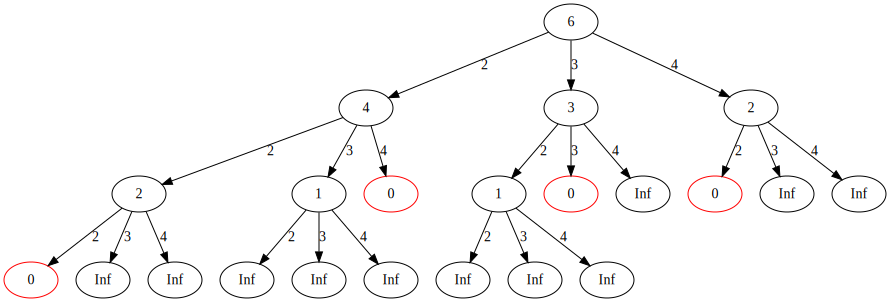

Given change C and $S=\{S_{1}, S_{2}, ... ,S_{k} \}$, find the mininum numbers of coins that adds up to C
let the numbers of coins to be $\varphi$
Example 1. Given change C = 6 and $S=\{2, 3, 4\}$, find the mininum number of coins adds up to 6
C = 6 = 2 + 2 + 2 $\Rightarrow \varphi =3$
C = 6 = 2 + 4 $\Rightarrow \varphi =2$
C = 6 = 4 + 2 $\Rightarrow \varphi =2$
C = 6 = 3 + 3 $\Rightarrow \varphi =2$
$\Rightarrow \varphi=2$
Mathematic Concept
Given C and find the linear combination of $S=\{S_{1}, S_{2}, ... ,S_{k} \} \Rightarrow C = \sum_{i=1}^{k} x_{i}S_{i}$
$C = 6\quad S=\{2, 3, 4\}$
$6 = 1*2 + 1*2 + 1*2 \Rightarrow x_{1}=1\quad x_{2}=1\quad x_{3}=1 \Rightarrow \varphi = 1 + 1 + 1 = 3 \textbf{ coins}$
$6 = 1*2 + 1*4 \Rightarrow x_{1}=1\quad x_{2}=1 \Rightarrow \varphi = 1 + 1 = 2 \textbf{ coins}$
$6 = 1*4 + 1*2 \Rightarrow x_{1}=1\quad x_{2}=1 \Rightarrow \varphi = 1 + 1 = 2 \textbf{ coins}$
$6 = 1*3 + 1*3 \Rightarrow x_{1}=1\quad x_{2}=1 \Rightarrow \varphi = 1 + 1 = 2 \textbf{ coins}$
Example 2. Given change C = 0 and $S=\{2, 3, 4\}$, find the mininum number of coins adds up to 0
Since C = 0, zero coin adds up to C = 0. Therefore, the solution is zero coin
C = 0 = 0 $\Rightarrow \varphi =0$
Mathematic Concept
$C = 0 = 0*2 + 0*3 + 0*4 \Rightarrow x_{1}=0\quad x_{2}=0\quad x_{3}=0 \Rightarrow \varphi = 0 + 0 + 0 = 0 \textbf{ coin}$
Example 3. Given change C = -2 and $S=\{2, 3, 4\}$(has no coin), find the mininum number of coins adds up to 6
There is no solution, since C is negative [ $\because$ we can't have negative number of coins ]
If C < 0, then we can let $\varphi =\infty$
Ok, you might ask why is $\varphi =\infty$, why not is $\varphi =0$
Well, $\varphi =0$ is the solution for C = 0. But I still don't understand why $\varphi$ has to be $\infty$
Real reason behind that why $\varphi$ has to be $\infty$
$\infty$ acts as identity for min( , ) operation
E.g. $0$ is the identity for + since $0 + a = a, a \in \mathbb{N}$
E.g. $1$ is the identity for * since $1*a = a, a\in \mathbb{N}$
Similarly, $\infty$ is the identity for $min( , )$ since $min(\infty, a) = a, a \in \mathbb{N}$
min(,) is called monoid with Math.MAX_VALUE as identity
Ok, make sence, but why do we need the $\infty$ as identity for the [ coin change problem ]
Let's look at the following graph for $\text{coin } = \{2, 3, 4\}, S = 6$
The value of each node $=$ the value of parent node $-$ weight of the edge [ except the root node ]
Some leaf nodes are $\infty$ since the value of parent node $<$ the weight of edge
Why we set the value of the node = $\infty$ ? since we know the path contains $\infty$ can't be a solution
The only path might be a solution is the value of leaf node has to be zero [ which is the red node ]
Since we are looking for the minimum number of coins, then the solution(s) has/have to be the shortest path from the root

// /Users/cat/myfile/bitbucket/java/CoinChange.java
//CoinChange.java
//Given coin{2, 3, 4} and s = 6
//Find the minimum number of coins sums up to s
public static int minCount(int[] coin, int s, int k) {
int min = Integer.MAX_VALUE;
if(s == 0)
min = 0;
else if(s > 0) {
// min(s) = min(s-coin[k]) + 1
for(int i=0; i < k; i++) {
int childMin = minCount(coin, s-coin[i], k);
if(childMin != Integer.MAX_VALUE)
min = Math.min(min, childMin + 1);
}
}
return min;
}
Coin Change, 2018 version in Java
/*
(4) -> (4 - 2) -> (2 - 2)
{2} s = 4
[ s=4
[ s=2
[ s = 0
0 <-]
1 <-]
2 <-]
*/
public static int minCoins(List list, int s){
int min = Integer.MAX_VALUE;
if( list != null){
if (s < 0){
return Integer.MAX_VALUE;
}
else if( s == 0){
return 0;
}else{
for(Integer n : list){
min = Math.min(min, minCoins(list, s - n));
}
}
}
return min + 1;
}